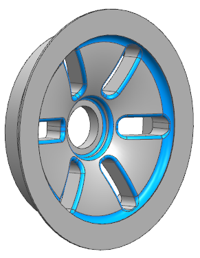

Use the Assign Feature Color command to assign a color property to a feature. The color is inherited by all faces that are created or modified by the feature. When you modify a face several times, it takes on the color of the last feature you used to modify it.
|

|
Use this enhancement to view different features and their output faces in a specific color.
|
Application |
Modeling, Shape Studio, NX Sheet Metal |
|
Menu |
Edit→Feature→Assign Feature Color |
|
Graphics window |
Right-click a highlighted feature and choose Assign Feature Color. |